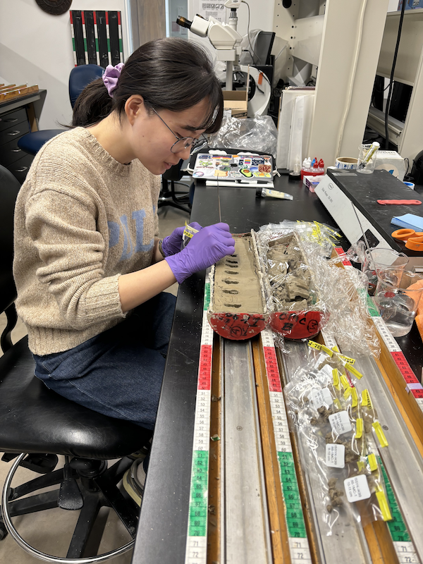

Currently a PhD candidate studying paleoclimate and organic geochemistry at UMass-Amherst.
Hello! I'm Heeyeon Sun, a paleoclimatologist based on organic biogeochemistry in Massachusetts. With over 8 years of research and lab experience, I thrive at the intersection of paleoclimate, biogeochemistry, and earth sciences. My passion lies in delving into the development of climate history in a lacustrine environment based on a multi-proxy organic geochemical approach.
🎓 Current Position: PhD Candidate in Geosciences at UMass Amherst
🧪 Research Interests: Paleoclimate, Organic Geochemistry, Lake Sediments, Climate Variability